1～9F
主要收集道具。かなしばりの杖、いちじしのぎの杖收集到时不要乱用，吸收之壶如果收集到2个的话用其中1个来全部吸收ゲイズ的特技。此外ゲイズの肉、ヒツジしんかんの肉、まどろみつかいの肉都尽可能收集多一点，パコレプキンの肉收集2个就差不多了。
10～11F
使用快速升级法提升LV，方法前文已经介绍过，在此就不多说了，注意若是利用まどろみつかいの肉变身去解决グレンゴ―グラ―，快打死它时要变回西林的状态用菜刀杀掉，Why？当然是希望得到肉以方便再升级啦。这2层会有クロスボウヤ�`出现，收集99支铁箭备用吧，另外再收集2个エ�`テルデビルの肉以防遇上大部屋怪物房间时逃跑之用。
12～13F
鬼面武者、いやしウサギ出现，因为这时身上还只能带20个道具，那么先收集1个いやしウサギの肉，等到14F～15F提升其级别再利用オドロ降低其攻击力从而得到きゅうめいウサギの肉。
14～15F
激动人心的时刻终于来临！“シュ�`ベル肉店”与“壶つりちょうろう壶店”高级技巧双龙出海，大量怪物肉、吸收之壶、普通之壶入手。这2层的怪物肉收集影响到以后能否在迷宫内继续生存，所以一定要认真对待，打好基础。如没意外的话，应该能成功收集到オドロ、しゅくふくカズラ、イカエンペラ�`、ヒャクメまじん、きゅうめいウサギ、タイショウどん等肉，シュ�`ベル、壶つりちょうろう和般若武者的肉各收集2个以上，鬼面武者和恶魔男爵的肉最好各收集3个以上，若你认为需要的话也可收集2个ア―クドラゴンの肉，不过很少用得上。がぶのみムシの肉在提升满腹度至极限之后可舍弃，不必保存。除了收集怪物肉，也必须用吸收之壶吸取一些强力怪物的特技作辅助战斗以及逃生之用，大家参照秘传心法中说明的那样就可以了。
| シュ�`ベル肉店 |
| 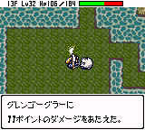 |
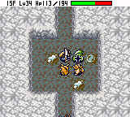 |
| ▲首先利用グレンゴ―グラ―来大幅度强化LV，每只EXP有4000点哦！ |
▲到达14～15F时利用的シュ�`ベル的召唤特技来得到想要的部分怪物肉。 |
| 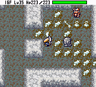 |
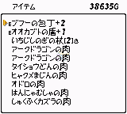 |
| ▲肉店开到商店中了，图为入手ヒャクメまじんの肉的实况画面。 |
▲游戏初期就入手了大量的LV2～LV3的强力怪物肉，呵呵。 |
| 壶つりちょうろう壶店（业余型） |
| 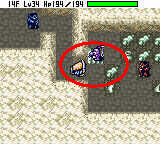 |
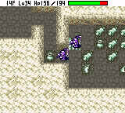 |
| ▲首先将壶つりちょうろう定身在图示的位置。 |
▲之后变身成壶つりちょうろう杀死路过的怪物得到壶。 |
| 壶つりちょうろう壶店（量产型） |
| 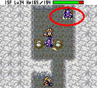 |
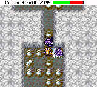 |
| ▲首先也是将壶つりちょうろう定身在图示的位置。 |
▲之后杀死シュ�`ベル召唤出的怪物获取大量的壶。 |
| 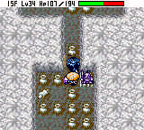 |
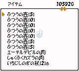 |
| ▲待恶魔男爵走到这个位置就OK了。 |
▲得到了N多的普通之壶。 |
16～20F
无特别的要点，基本上捡完道具就可走下楼梯。这几层可收集2个パコレプキ―ナの肉备用。
21～33F
这几层主要搜索しあわせの杖和へんげの杖，多杀ドラゴン可能会得到道具，但不一定是杖。成功入手后尽快提升LV至极限并用祝福的へんげの杖尝试令ミニマゼルン系怪物降临来合成装备。27～33F恶魔侯爵（あくまこうしゃく）出现，可趁此机会利用“壶つりちょうろう壶店”的技巧补充一下普通之壶和吸收之壶，并收集2个恶魔侯爵的肉备用。
34～40F
34F～35Fエビルカンガル�`出现，它会使用魔法令其他怪物2倍速，见到时绝对优先屠杀，以免后患无穷，一般可循着2倍速怪物的来路而找到エビルカンガル�`藏身的房间，36～37F有LV3的ベルト�`ベン出现，与其作战时最好在窄道中进行，以免其召唤出太多的怪物。37～40F要注意骸骨魔王（ガイコツまおう）的远程魔法。
41～49F
みかわしせんにん在41～45F出现，对它直接攻击无效，可用吸收之壶将其特技封印并尝试将其肉化，得到的肉用来对付ギャザ�`系的怪物（通常主要对付90～98F的ヘルギャザ�`），如果不想收集肉可用へんげの杖将其变化之后解决，此招在以后的冒险会经常使用以对付一些难缠怪物。此外，将军的出现令“怪物肉无限增殖法”得以运用，大家可以把想要增殖的肉大量增殖，例如しゅくふくカズラの肉、イカエンペラ�`の肉、壶つりちょうろうの肉以及ミニマゼルン系的怪物肉等等，并且祝福杖、合成装备、补充吸收之壶以及吸收大量イカエンペラ�`的特技，完成一次大幅度全方位的补给，终结前半部分冒险流程。
50～55F
终于捱过了一半，这几层透明的ホルムデ�`モン开始登场，会反射魔法，建议收集3个以上ホルムデ�`モンの肉，若是这几层不幸遇上大部屋怪物房间就吃下逃跑。
56～59
イカエンペラ�`出现，这几层正好可以用吸收之壶补充イカエンペラ�`的特技，而且收集1～2个肉备用也没有问题，此外要小心キラ�`ギャザ�`，遇上非大部屋怪物房间时用パコレプキン系的肉逃生。
60～66F
爆弹暴风雨肆虐，这几层是爆弹系怪物的天下，而且还有バットカンガル�`、エビルカンガル�`和ヒャクメまじん的助阵，硬拼只会得不偿失，建议采用“高速潜行”的行动方式冲过这几层（不再多杀敌不再寻找道具而一见到楼梯就下的行动方式称为高速潜行）。
67～69F
没有太特别的难点，不过要注意きゅうめいうさぎ的援助回复特技。如果缺少吸收之壶这几层可以使用技巧补充一下，使用技巧前请参考下文80～89F说明的深层使用安全措施。
70～79F
最讨厌的家伙ノコギガッタ�`降临了，这家伙的特技是把附近的其他怪物像扔皮球一样扔向西林，与西林近身时则是把西林扔向附近的机关，真是衰人！有点纳闷它“投篮技术”那么好，怎么不去参加NBA比赛呢（暴笑）？不用犹豫了，用祝福的杖对付它吧，此外恶魔暴君（あくまぼうくん）也君临天下，如果你还需要恶魔男爵系的肉来使用“壶つりちょうろう壶店”技巧的话，那么就抓住最后的机会了，建议使用ふうこの杖来降低其LV，这样比较容易解决，得到肉的几率也略为提高。76F以后デビルカンガル�`助战，2倍速兼且发怒状态的怪物绝对令你陷入苦战，由这个阶段开始应尽量避免与敌人直接搏斗，多使用杖来扫障，并且采用“高速潜行”的行动方式前进。
80～89F
这几层最难缠的怪物当属メチルサタン，透明状态、2倍速行动兼且魔法乱反射，狗洞中首屈一指的杀手。如果能够确认其方向，可用亡灵武者的特技瞬杀，不然也可吃下般若武者的肉来对付。遇上大部屋房间时绝对不能用イカエンペラ�`的特技，而应吃下エ�`テルデビル系的肉逃跑，当然吃般若武者的肉也是可以的，不过增加了博杀的过程，而变身时间有限，这样做有一定的危险性，不推荐。
经过前面的爆弹暴风雨的洗礼和ノコギガッタ�`的“投篮地狱”后，吸收之壶应该也用得差不多了（如果足够可以跳过此处不看），建议在85～89F这个阶段使用至少一次“シュ�`ベル肉店”与“壶つりちょうろう壶店”的技巧，补充需要的怪物肉和吸收之壶，以迎接90～98F的最后冲刺阶段。由于是在迷宫的深层，怪物实力很强，尤其这几层还有メチルサタン出现，所以使用时有必要采取一些安全措施。下面向大家讲解一下，首先应先找到楼梯所在的房间，若房间够大的话就可以直接“录用”，不然就另外找两间相互连通且离楼梯较近的较大房间作为使用场地，然后待过路的怪物走到房间外的窄道中时使用かなしばりの杖将其定身堵住窄道，再如法炮制将所有通向房间的窄道堵住（当然自己要站在房间内），此为“封场”。最后在所有被定身的怪物身上挂一个牌子，上写“前面开片，行人绕道”，OK，大功告成。这样一来所有过路的怪物就只能乖乖地在房间外边看热闹，而你也可以安心地在房间内“开片”，最后那些怪物看得久了自然会无趣地离去。需要说明的是，有爆弹系和ノコギガッタ�`出没的阶层是无法成功施展“シュ�`ベル肉店”和“壶つりちょうろう壶店”的技巧的，因被其破坏的可能性非常高，拖到85～89F才使用也是鉴于这个原因。
90～98F
最后冲刺阶段了，各位努力啊。对スカイドラゴン和きゅうめいうさぎ可使用ふうこの杖轻松解决，而ヘルギャザ�`用亡灵武者的特技瞬杀，或者吃下みかわしせんにん或般若武者的肉对付，94F开始デビルカンガル�`出现助战，这家伙是当之无愧的最强支援系怪物，总之把身上的道具都用上，胜利就在眼前啦！
kenyo语：使用太多次高级技巧的话会耗费很多回合数和时间，当然对番付点数会造成负面影响（详见番付点数计算法则），所以若想达成比较高的番付点数，最好是只使用1～2次高级技巧之后就尽量高速潜行，以下是笔者快速破关的一个成绩，只重速度不重番付点数，快破关的时候刻意让发怒的くねくねハニ�`使用特技降到了LV1，哈哈。
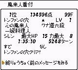
<<<<<< [Page1] 【Page2】 [Page3]
[Page4] >>>>>>
|